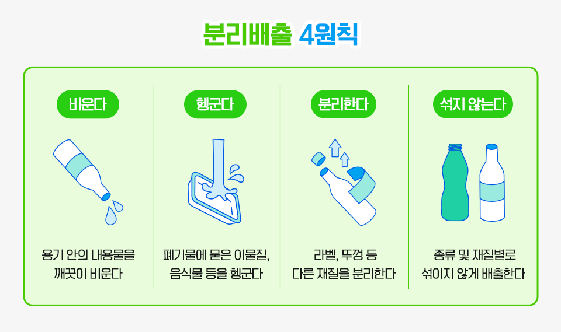

AI ANALYSIS RESULT
분리배출 전
이 순서로 확인하세요
- 내용물을 비우세요.
남은 음식물·액체가 있으면 먼저 제거합니다. - 재질을 확인하세요.
용기·뚜껑·라벨처럼 다른 재질은 분리합니다. - 깨끗하게 배출하세요.
오염이 심하면 일반쓰레기로 배출합니다.
※ 현재는 안전한 AI 서버 연결 전의 안내 화면입니다. 실제 AI 판독은 서버 연결 후 사진별 결과로 바뀝니다.
GWANGALLI BEACH · BUSAN
가까운 화장실을 찾고, 사진으로
분리배출 방법을 확인하세요.
01
NEARBY GUIDE
현재 위치를 허용하면 광안리 해변 인근의 공중화장실 네 곳 중 가장 가까운 곳을 안내합니다.
길찾기 버튼을 누르면 네이버 지도가 열립니다.
02
PHOTO CHECK
버릴 물건을 찍어 올리면, 다음 단계에서 재질·배출 방법·주의사항을 한눈에 확인할 수 있어요.

비운다 · 헹군다 · 분리한다 · 섞지 않는다
03
AI SORTING RESULT
사진을 올리면 아래 결과 카드에서 버리는 순서를 확인하세요.
04
WHY IT MATTERS
LOCAL ISSUE · 2022
국제신문은 광안리 해수욕장에서 열린 해변 줍깅 활동을 소개했습니다. 해변에 남겨진 플라스틱과 생활쓰레기는 파도와 빗물에 쓸려 바다로 흘러갈 수 있습니다.
쓰레기를 ‘조금만’ 남기는 행동도 해양 생태계에는 오래 남습니다. 가져온 쓰레기는 되가져가거나, 재질별로 나누어 올바르게 배출해 주세요.
관련 기사 읽기 ↗